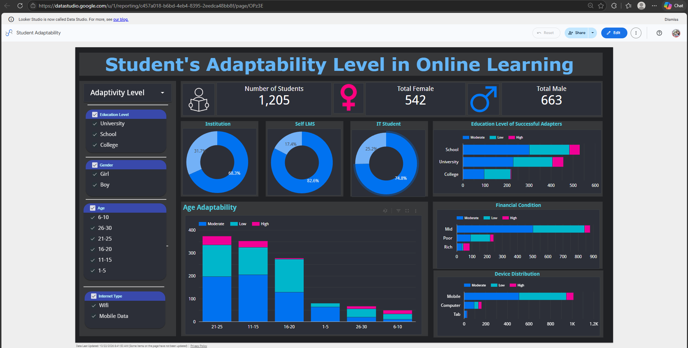

‹
Team Petix member
Ma. Carmela Paula Oreta
BSIT in Data & Analytics
›
About Me
A driven BSIT student specializing in Data Analytics. Focused on transforming complex business data into intuitive visualization tools and actionable reports.
Education
BS Information Technology Major in Data Analytics
Mapúa Malayan Digital College | Present
Specializing in web technologies, database architecture, business intelligence, and exploratory data analysis.
Skills & Competencies
- Business Analytics
- Data Visualization
- SQL Database Design
- JavaScript
- HTML & CSS
Projects
Team Petix Web Systems Portfolio
Co-created responsive web components, optimized user interface layouts, and structured profile page templates.

Looker Studio Dashboard
Student Adaptability in Online Learning
Created by Ma. Carmela Paula Oreta
Interactive report exploring students' online learning adaptability across education level, gender, age, institution, learning platform, internet access, and financial condition.
Open Looker Studio report →
 Tableau Public Dashboard
Tableau Public Dashboard
Marketing Campaign Performance
Created by Ma. Carmela Paula Oreta
Interactive marketing analytics dashboard comparing campaign ROI, engagement, impressions, clicks, conversion, and audience segments across channels and locations.
Open Tableau dashboard →
MotorPH Sales Dashboard
SalesMonthly trend
ProfitBy category
ProductsTop sellers
Excel Dashboard
MotorPH Sales and Product Analysis
Created by Ma. Carmela Paula Oreta
Excel dashboard summarizing sales and profit performance, monthly trends, leading products and categories, payment methods, and supporting product analysis.
Download Excel workbook ↓